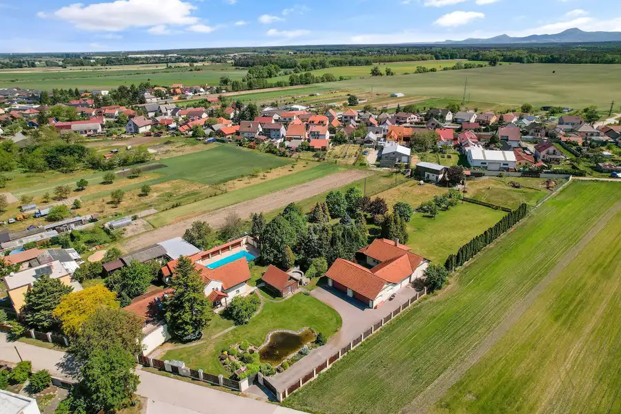
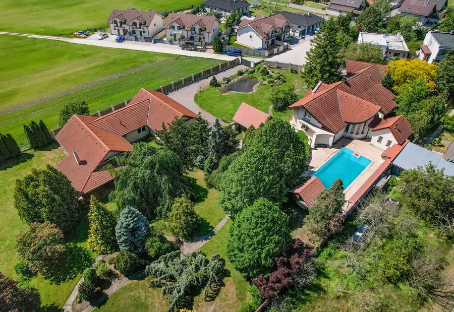

MIKELSSEN - Na prenájom 3 izbový byt na Belehradskej ulici
Nové Mesto, Bratislava
- Dispozícia3-izbový
- Plocha79 m²
- Poschodie4. z 6
- StavKompletná rekonštrukcia
O nehnuteľnosti
Realitná kancelária Mikelssen exkluzívne ponúka na prenájom príjemný a svetlý 3 izbový byt na Belehradskej ulici v Bratislave, ktorý je ideálnou voľbou pre ľudí hľadajúcich pohodlné bývanie v dobre dostupnej lokalite.Byt sa nachádza na 4. poschodí a ponúka praktické dispozičné riešenie. Pre komfort počas celého roka je vybavený klimatizáciou. K bytu patrí samostatné WC, pričom v kúpeľni sa nachádza vaňa a práčka. O príjemné súkromie a reguláciu svetla sa postarajú vnútorné žalúzie aj vonkajšie rolety na oknách vďaka čomu pôsobí útulne a ponúka príjemné podmienky na dlhodobé bývanie. Byt sa prenajíma maximálne pre 3 osoby a bez zvierat. BYT: 3izbový byt s balkónom 79m2 úžitková plocha: (76m2 výmera bytu + 3m2 balkón) orientácia: západ mesačné prevádzkové náklady: 330eur/mesiac vrátane internetu a TV VÝHODY: výborná lokalitapriestranný interiérsamostatná toaletaveľký dvor za domom len pre obyvateľov domuDISPOZÍCIA: Byt je dispozične dobre rozdelený na dennú a nočnú časť ktorú oddeľuje vstupná chodba. Obývačka je prepojená s kuchyňou. Samostatná toaleta a kúpeľňa kde sa nachádza vaňa.LOKALITA: Výborná dostupnosť MHD, obchody, reštaurácie, služby a ďalšia občianska vybavenosť v pešej dostupnosti. Centrum Bratislavy je ľahko dostupné autom aj verejnou dopravou. Byt je voľný ihneď CENA 1 330EUR (1 000EUR/mesiac byt, 330EUR/mesiac energie) V prípade záujmu nás neváhajte kontaktovať na čísle 0948 603 605 alebo emailom na polasek@mikelssen.sk, radi pre Vás zorganizujeme obhliadku. Text a fotografie sú autorským dielom a majetkom realitnej kancelárie MIKELSSEN
Parametre
| Cena vrátane energií | Nie |
|---|---|
| Druh | 3 izbový byt |
| Dátum zverejnenia | 25. 8. 2026 |
| Energetický certifikát budovy | nie je |
| Energie | 330 |
| Orientácia | Juhozápadná |
| Podlažie | 4 |
| Počet balkónov | 1 |
| Počet nadzemných podlaží | 6 |
| Stav nehnuteľnosti | Kompletná rekonštrukcia |
| Typ | Prenájom |
| Typ konštrukcie | Zmiešaná |
| Vybavenie | Balkón, Verejné parkovanie |
| Úžitková plocha | 79 m² |
Kde to je


Mohlo by Vás zaujímať

PozemokNové10 Cena dohodouMIKELSSEN - Na predaj 7 979 m² pozemok pre developerský projekt s veľkorysým rodinným domom Láb 7979 m² Realitná kancelária MIKELSSEN ponúka exkluzívne na predaj jedinečný pozemok v obci Láb, ktorého najväčšou pridanou hodnotou je významný developerský…
DomNové10 Cena dohodouMIKELSSEN - Na predaj rodinný dom s developerským potenciálom na pozemku o výmere 7979m2 Láb 672 m² Realitná kancelária MIKELSSEN ponúka exkluzívne na predaj jedinečnú nehnuteľnosť v obci Láb, ktorá predstavuje ideálne spojenie komfortného bývania,…